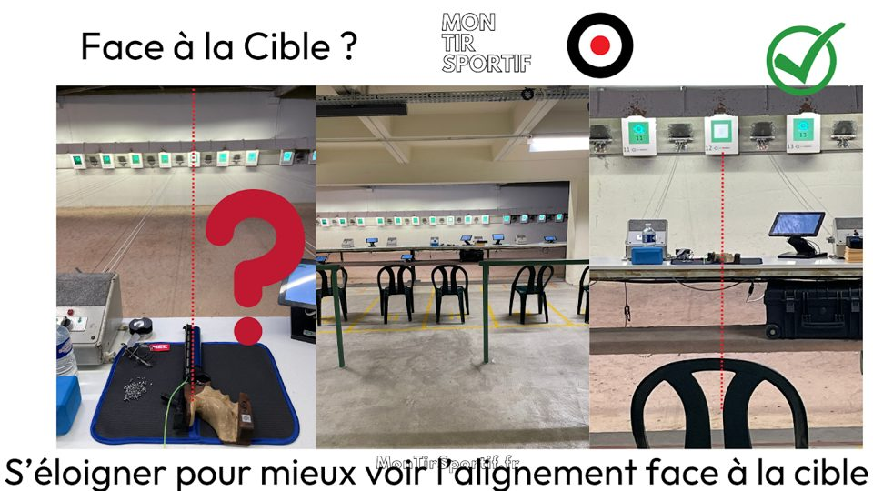
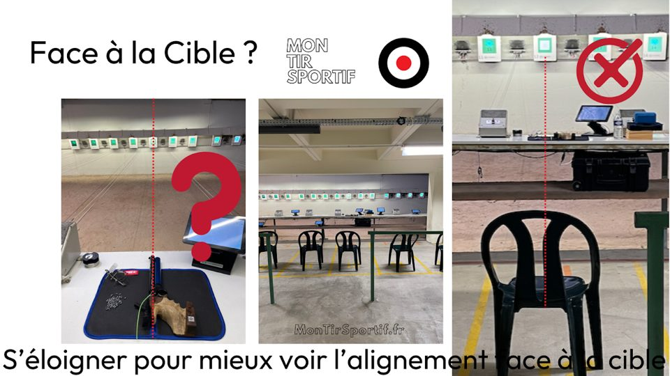
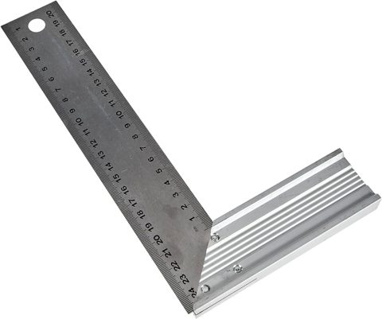
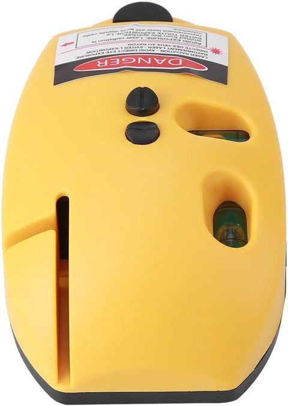

1Préparation technique
Position, prise en main, visée, respiration et lâcher : les gestes qui font partir un bon coup.
La sécurité
Une arme doit TOUJOURS être considérée comme CHARGÉE. Elle ne doit jamais être dirigée vers soi-même ni vers quelqu'un d'autre.
La sécurité concerne toutes les personnes présentes sur le stand : tireurs, moniteurs, arbitres, dirigeants et spectateurs. S'appliquent à la fois les règles de la FFTir, celles de chaque discipline et le règlement de votre club.
Au pas de tir
- Canon toujours dirigé vers les cibles.
- L'index hors de la détente tant qu'on n'est pas en visée.
- Arme ouverte, avec le drapeau de sécurité, dès qu'on la pose.
- Aucune manipulation quand quelqu'un est aux cibles.
Pour le transport
- Arme désapprovisionnée, démontée ou équipée d'un verrou qui empêche de s'en servir.
- Dans une mallette ou une housse, les munitions rangées à part.
- La licence FFTir à jour sert de motif légitime de transport.
Obligatoire pour les armes de catégorie B et les arbalètes ; recommandé par la FFTir pour toutes les armes de sport.
Les papiers à avoir sur soi
- La licence FFTir à jour : obligatoire.
- L'autorisation de détention : conseillée.
- La facture de chaque arme, éventuellement.
Les fondamentaux du tir au pistolet
« Ne pas oublier que le tir reste un jeu, pas un enjeu. »
Le tir repose sur quatre éléments techniques, reliés par une coordination. Au-delà de la technique, la performance dépend aussi d'éléments réglementaires, émotionnels, matériels et environnementaux. Et la performance n'est pas forcément un score ou un classement : elle est propre à chaque tireur.
1. La position
Placer le corps (squelette, muscles, articulations) pour tenir l'arme avec le moins de mouvement possible, le plus longtemps possible : la stabilité maximale.
2. Le placement
Orienter l'arme dans l'axe de la cible sans défaire la position.
3. Le lâcher
Faire partir le coup sans faire bouger l'arme.
4. La visée
Aligner la ligne de mire sur la ligne de visée le plus précisément possible, pour que le projectile aille au centre.
5. La coordination
Organiser les quatre éléments pour que le coup parte quand la position est la plus stable, dans l'axe de la cible, avec un lâcher sans mouvement parasite et une visée bien ajustée.
La position : un socle stable et naturel
La position doit permettre au bras de pointer naturellement vers la cible, sans effort musculaire pour « corriger » la direction. On cherche un équilibre stable, détendu et parfaitement reproductible.
La prise en main : la même, à chaque coup
La poignée relie le tireur à l'arme. Une prise qui varie d'un coup à l'autre déplace les impacts, même si tout le reste est parfait.
Contrôlez votre prise
Avant chaque coup, vérifiez rapidement :
- Les organes de visée sont-ils alignés sans que je bouge le poignet ?
- Mon pouce est-il relâché (posé sur le repose-pouce, sans pousser) ?
- Ma pression est-elle la même qu'au coup précédent ?
Chausser sa crosse
« Chausser » sa crosse, c'est installer sa main dans la poignée, toujours de la même façon. C'est le premier geste de chaque coup : une main mal placée oriente l'arme de travers et oblige à corriger avec le poignet.
La « prise inversée » en 5 étapes
Les points de contact
Les pressions s'exercent dans l'axe du canon, d'avant en arrière. Les appuis à privilégier :
- la base du pouce (éminence thénar) ;
- le bord de la paume côté auriculaire (éminence hypothénar) ;
- le creux de la paume ;
- la deuxième phalange des doigts.
L'index reste libre, sans toucher la carcasse ; le pouce est posé, détendu.
Doser le serrage
Sur une échelle de 0 à 10, la bonne tonicité se situe entre 6 et 7. Trop fort, la main tremble et transmet des vibrations ; trop faible, le poignet n'est plus verrouillé. Gardez la même pression à chaque coup.
D'après la fiche Bensport : La position du pistolier à la loupe ↗
La position à la loupe
Construire sa position est souvent l'étape la plus longue du tir. Toute variante doit respecter trois critères : produire de la stabilité, être reproductible et préserver le corps du tireur. Les exemples ci-dessous concernent un tireur droitier.
Profil
Épaules, bassin et pieds alignés sur un même plan, dans l'axe de tir. Convient aux tireurs souples, à l'aise avec une rotation importante de la tête.
7/8e
Le corps s'ouvre légèrement vers la cible. C'est la position la plus répandue : plus confortable pour le cou et les épaules.
3/4
Plus ouverte encore. Adaptée quand la souplesse ou la corpulence limitent l'amplitude des gestes : imposer le profil créerait tensions et douleurs.
Trouver sa position naturelle
Les défauts de posture fréquents
| Défaut | Ce qui se passe | Correction |
|---|---|---|
| La vrille | Les épaules ne sont pas sur le même plan que le bassin et les pieds. | Orienter les pieds, puis faire pivoter la ligne d'épaules pour revenir en cible. |
| Pieds trop écartés | Le tireur penche et se cambre pour compenser le poids de l'arme : appuis déséquilibrés, tensions dans les genoux, les chevilles et le bas du dos. | Revenir à un écart proche de la largeur des épaules, poids réparti sur toute la voûte plantaire. |
| Bassin non verrouillé | Le poids de l'arme entraîne le corps vers l'avant : épaule libre haute et contractée, posture instable. | Verrouiller le bassin (genoux légèrement en arrière, fessiers serrés) et chercher le tassement en restant droit. |
→ Chausser sa crosse et doser le serrage
Fiche Bensport : La position du pistolier à la loupe ↗ · La technique de base du pistolet 10 m ↗
Se placer face à la cible
Une bonne position ne suffit pas : elle doit être orientée vers la cible. Si le corps est décalé, le bras ne pointe plus naturellement vers le visuel et il faut le ramener avec les muscles. Le geste se fatigue, et les impacts se dispersent en direction.
Être face à la cible, pas si simple
- Le stand trompe : la disposition du pas de tir, les cloisons ou l'absence de repères au sol rendent l'alignement plus difficile qu'il n'y paraît.
- Reculer pour voir : faites un pas en arrière derrière le poste. On juge bien mieux, de là, si les pieds et les épaules sont dans l'axe de la cible.
- Corriger avec les pieds : si vous n'êtes pas face à la cible, décalez-vous latéralement, sans tourner le bras ni le buste.
- Contrôler les yeux fermés : le bras doit retomber sur le visuel sans effort (voir la position à la loupe).
S’éloigner pour mieux voir


Se décaler latéralement

Les accessoires pour vérifier
- Une équerre posée au sol, pour aligner les pieds sur la ligne de tir.
- Un ou plusieurs lasers, pour matérialiser la direction de la cible et la comparer à celle de son corps.
- Des repères au sol (ruban adhésif) pour retrouver le même placement d'une séance à l'autre.


Pour aller plus loin

Pistol Shooting – The Olympic Disciplines, de Heinz Reinkemeier et Gaby Bühlmann (éditions MEC, en anglais). Technique, entraînement, tactique, psychologie et armes, un ouvrage de référence sur le pistolet olympique.
Boutique MEC ↗ · Heinz Reinkemeier ↗
Face à la cible (MonTirSportif)
Alignement face à la cible avec un laser (H. Reinkemeier, en anglais)
La visée : le guidon net, la cible floue
L'œil ne peut pas faire la mise au point sur trois plans à la fois (cran de mire, guidon, cible). Le principe essentiel : la netteté est sur le guidon. L'alignement guidon/cran de mire compte beaucoup plus que la position exacte sur la cible.
Accepter les mouvements
Personne ne tient l'arme immobile. Le bras décrit une petite zone d'oscillation : on l'accepte, on garde l'alignement, et on lâche sans chercher à « attraper » le centre.
Les deux yeux ouverts
Un cache translucide devant l'œil qui ne vise pas évite de le fermer et de crisper le visage.
Durée de visée
La vision se fatigue vite. Si le coup ne part pas dans les quelques secondes de bonne stabilité, reposez l'arme et recommencez.
Erreur parallèle, erreur angulaire
La ligne de mire (du cran de mire au guidon) donne l'orientation exacte du canon. C'est pourquoi l'œil fait la mise au point sur elle, comme on regarde le niveau à bulle et pas l'étagère quand on bricole.
- Erreur parallèle : la ligne de mire est bien alignée mais décalée par rapport au visuel. Elle coûte peu : 1 mm de décalage donne environ 1 mm en cible.
- Erreur angulaire : le guidon n'est pas bien placé dans le cran de mire. Elle coûte cher : 1 mm d'écart entre cran et guidon donne environ 3 cm en cible à 10 m.
- Conséquence : un bon alignement compte bien plus que la position exacte sur la cible. Une bonne vue de près est plus utile qu'une bonne vue de loin.
Les « lumières »
Ce sont les deux espaces clairs de part et d'autre du guidon. Un guidon plus fin n'est pas plus précis : il devient plus difficile à distinguer. Testez plusieurs largeurs de guidon et de cran de mire.
Visez avec une marge de blanc confortable sous le visuel : la ligne de mire reste facile à lire et l'attention reste dessus.
Le cache-œil (30 mm de large au maximum) détend les muscles du visage ; certaines lunettes de tir ont un iris réglable qui affine la vision de la ligne de mire.
Fiche Bensport : Le guide du pistolier ↗ · La technique de base du pistolet 10 m ↗
La visée en détail
Viser, c'est aligner ses appareils de visée face à la cible : le guidon et le cran de mire, face au centre de la cible.
Une droite imaginaire qui part de l'œil, passe par les organes de visée et arrive sur la cible, dans la zone de visée.
La ligne imaginaire qui passe par le cran de mire et le guidon : c'est elle qui donne l'orientation du canon.
La visée : la position du guidon dans le cran de mire
L'entrée en cible
Ce que c'est
- Le geste qui amène la ligne de mire dans la zone de visée.
- En précision, on entre en général par le haut de la cible.
- En vitesse (standard, 3×7, vitesse olympique), on entre par le bas : c'est l'« attaque par le bas » (voir le geste d'attaque).
- Aucune règle ISSF n'impose une façon d'entrer en cible, tant que la sécurité est respectée. Ce qui compte, c'est la régularité, surtout sur un match de 60 coups.
Comment faire
- Partir toujours du même point A pour arriver toujours au même point B, la zone de visée.
- La descente verticale du bras est le geste classique, mais elle n'est pas obligatoire : une entrée oblique, voire par le bas, est possible si le passage dans le visuel gêne.
- Prendre un repère au-dessus de la cible (une marque au mur, un impact…), en essayer plusieurs et garder celui qui amène régulièrement dans la zone de visée.
- Le guidon peut dépasser un peu du cran au moment du repère : il se réaligne pendant la descente.
- Avec l'expérience et au fil de la saison, on passe des repères visuels à des repères kinesthésiques (les sensations du corps).
Entrée en cible depuis un repère au-dessus de la cible
Le regard est-il sur le guidon ?
Le guidon est net, la cible est floue.
Le guidon est flou, la cible est nette : reposez l'arme, puis reprenez votre séquence de tir.
Le regard
La marge de blanc
- C'est l'écart entre le bas du visuel et le haut du guidon.
- Pourquoi ne pas viser le centre ? Les organes de visée, noirs, se confondraient avec le visuel noir. On règle donc l'arme pour toucher plus haut que le point visé : la visée se détache sur le blanc, sous le visuel.
- La marge sert de référence autour de laquelle on fait de petites oscillations. Elles diminuent avec l'entraînement et changent peu le score.
- Une marge petite (6 ou 5) convient quand la stabilité est bonne. Choisir sa marge est important : testez-la (voir l'exercice la marge de blanc).
Le bouger : on peut faire un 8… ou un 9
Le bougé est naturel, variable et souvent plus fort en match. Mieux vaut l'accepter et apprendre à tirer dans le bougé que lutter contre. Même un bougé important reste dans la zone du 8 : c'est assez pour un bon tir, à condition d'avoir un bon lâcher.
Pour aller plus loin (en anglais)
Pistol Focus (Heinz Reinkemeier)
Aiming with the Pistol (Heinz Reinkemeier)
La respiration : un temps calme pour tirer
La respiration fait monter et descendre le bras. On tire donc pendant une courte pause respiratoire, toujours au même moment du cycle.
Le lâcher : presser sans perturber
Le lâcher est la technique qui fait la différence. L'objectif : faire partir le coup sans que l'action du doigt ne déplace l'arme. C'est souvent ici que se perdent les points, bien plus que dans la visée.
Les deux temps de la détente
1. La bossette (pré-course) : on prend la première course de la détente pendant la descente vers la cible.
2. Le départ : une fois en zone de visée, on augmente la pression de façon continue et progressive, droit vers l'arrière, jusqu'à ce que le coup parte.
- La pression s'exerce avec le milieu de la première phalange de l'index.
- Le reste de la main ne bouge pas : seul l'index travaille.
- Le départ doit presque « surprendre » : on ne décide pas de l'instant exact, on continue la pression en gardant l'alignement.
La continuation (le « suivi »)
Après le départ, gardez la visée et la pression sur la détente pendant une à deux secondes. Ce moment permet d'« annoncer » le coup : où était le guidon au départ ? Si votre annonce correspond à l'impact, votre technique est maîtrisée et il ne reste qu'à affiner.
Les différents types de lâcher
Un bon lâcher surprend le tireur sans perturber la ligne de mire. La position de la ligne de mire sur la cible au moment du départ n'est pas le premier critère : c'est la stabilité de l'arme qui compte.
Pression continue
La détente est pressée très progressivement. Adapté aux longues phases de stabilité.
Lâcher en préparation
La pression commence avant la stabilité complète et se termine à la surprise du départ. Il réduit le temps de visée : utile quand la lumière est forte ou changeante.
Palier de pression
La pression monte par paliers, avec de courtes pauses, à mesure que l'arme approche de la zone de visée. Le tireur ne sait pas exactement quand le coup partira.
Comprendre sa détente
- Détente à précourse : une première course réglable, puis un point de résistance qui correspond au poids de départ. Le poids total = précourse + accrochage.
- Détente « filante » : pas de point de transition net, la surprise du départ est presque systématique. Excellente pour perfectionner son lâcher.
- Détente directe : sans précourse, on estime le poids restant à vaincre (revolvers, pistolets 50 m).
À retenir
- Le lâcher s'apprend d'abord consciemment, puis s'automatise par des exercices répétés (le tir à sec en tête).
- Le coup de doigt naît d'une pensée du type « maintenant ! ».
- Le départ ne se produit pas forcément quand la ligne de mire est dans la zone, mais quand elle s'en approche.
- La qualité du lâcher reflète la confiance du tireur.
Fiche Bensport : Les différents types de lâcher ↗ · Le guide du pistolier ↗
Le lâcher en détail
Le lâcher est un mouvement fait au moment où l'on cherche l'immobilité. En bougeant, le doigt peut faire bouger l'arme et l'écarter du centre : il doit donc agir très, très lentement.

Le lâcher : définition
Tout sur le lâcher : le rôle de la détente et du doigt
Trois acteurs : le doigt, la main, le cerveau
Il bouge : presse-t-il bien dans l'axe du canon ? Sinon, il déplace l'axe du canon et le point d'impact.
Ce sont les muscles de l'avant-bras qui font bouger les doigts. Si d'autres muscles que ceux de l'index travaillent, la pression sur la crosse change, et l'impact avec.
Il ne fait bien qu'une chose à la fois. S'il surveille le doigt, il surveille moins la visée. Et s'il voit trop de mouvement, il intervient : il accélère le doigt pour « profiter » d'une belle image (coup de doigt), ou il le bloque (doigt de bois).


Les trois phases du lâcher
Le doigt est posé sur la queue de détente, sans pression, au centre, avec la pulpe de la dernière phalange.
La pression monte jusqu'au point dur (le pré-départ est rattrapé), toujours dans l'axe du canon.
La pression continue jusqu'au départ du coup… et se poursuit après, jusqu'à la butée de détente.


📄 Les phases du lâcher, version à imprimer (PDF)
Automatiser et coordonner
- Le lâcher est d'abord conscient, puis il devient automatique.
- On n'attend pas une bonne stabilité ou une belle visée pour le commencer : il se déroule tout seul pendant qu'on travaille la visée et la tenue.
- On ne réagit ni à l'image ni au mouvement : c'est ce qui provoque le coup de doigt.
- La sensibilité vient du contact de la pulpe de la dernière phalange ; le mouvement suit l'axe du canon.
Les critères de réussite
- L'arme n'est pas déstabilisée au départ du coup.
- Le guidon et le cran de mire ne bougent pas au départ.
- Le canon pointe vers le centre de la cible : il faut pour cela coordonner lâcher et visée.
- À l'air comprimé, l'apprentissage est plus facile à sec.
Le bon lâcher : pas de réaction de l'arme
Le lâcher en pratique
Le lâcher en pratique (2)
Le lâcher sur carton blanc
L'indépendance des doigts


- Quand l'index bouge vite, le majeur et les autres doigts ont tendance à suivre : c'est naturel, la main serre « en bloc ».
- Le majeur qui bouge change la pression sur la crosse, et provoque un coup de doigt.
- La solution : bouger l'index lentement et travailler l'indépendance des doigts, comme les guitaristes, pianistes ou accordéonistes.
- C'est d'autant plus utile que la détente est lourde : 500 g au pistolet 10 m, 1 kg au 22 LR à 25 m.
- Un petit appareil d'entraînement de guitariste permet de visualiser les variations de pression du majeur. Ne vous en servez pas pour vous muscler : les tendons n'aiment pas ça.
- Avec de l'entraînement, cette dépendance des doigts se corrige.
Un exercice de guitariste ↗ · L'indépendance des doigts à l'accordéon ↗
Nous n'avons pas de muscles dans les doigts ! (Scilabus)
Les trois défauts à connaître
Un lâcher qui déstabilise l'arme, le plus souvent par une action consciente sur la détente : l'arme ne pointe plus le centre (erreur angulaire). Wikipédia ↗
Voyant les organes de visée bien placés, le tireur accélère volontairement son lâcher : il réagit à ce qu'il voit au lieu de laisser le lâcher automatique se dérouler.
Le doigt s'arrête : le cerveau le bloque, par peur de mal faire ou par recherche excessive de la stabilité idéale. Une prise trop serrée peut aussi le bloquer. Remèdes : du tir à sec pour retrouver confiance, des exercices de lâcher par paliers, et ramener l'attention sur le début du lâcher.
Le lâcher dans le bouger
Comment obtenir un lâcher propre alors que l'arme bouge ? En lâchant dans le bouger, sans attendre l'immobilité parfaite.

Le lâcher dans le bouger (MonTirSportif)
Le lâcher au pistolet 10 m (Asian Shooting Confederation, en anglais)
Le tir de vitesse : geste d'attaque et VVL
Pour la vitesse olympique, le standard et le 25 m (partie vitesse), chaque coup commence par un geste d'attaque : le pistolet monte depuis la position « Prêt » jusqu'au centre de la cible, à une vitesse à peu près constante.
Ce qu'il faut coordonner
- Lancer la montée sans casser la fixation du poignet.
- Retrouver les organes de visée et s'y accommoder.
- Commencer l'action sur la détente assez tôt pour que le coup parte dès l'arrivée dans la zone de visée.
La détente pendant la montée
Certaines disciplines interdisent de mettre le doigt en pression avant la stabilisation ou la visée. Cette règle ne concerne pas le tir de vitesse ISSF : on commence le geste au point dur, puis on presse au-delà pendant la montée.
Les six étapes du geste d'attaque
On vise la cible, bras tendu.
Le bras redescend vers la position « Prêt ».
On attend l'apparition de la cible, bras immobile.
Le plus vite possible vers la cible, par le bas.
On retrouve guidon et cran de mire.
Le lâcher, la visée, et leur coordination.
Le geste d'attaque en vitesse olympique
Vitesse olympique : entraînement
Le geste d'attaque, par Boris Artaud
Le VVL : vite, vite, lent
En standard et en vitesse olympique, il faut rattraper la détente après chaque coup. Le VVL le fait en trois temps :
Relâcher la queue de détente.
Revenir sur le point dur.
Presser lentement jusqu'au départ du coup.
Le VVL, vite vite lent : tir de vitesse en VO et standard
La tenue
Au départ du coup : l'élément fondamental
Pendant le départ du coup, le cerveau anticipe déjà l'action suivante. S'il est « programmé » pour se relâcher à ce moment-là, l'engagement physique du tireur faiblit… et le coup en pâtit.
L'entraînement consiste donc à apprendre au cerveau à maintenir la position et l'engagement pendant et juste après le départ, pour que cette anticipation ne perturbe plus la tenue.
Après le départ du coup
La tenue prolonge, après le départ, toutes les actions qui l'ont produit : la position, la visée et le lâcher. On reste en position environ 2 à 4 secondes, comme si un second projectile allait partir.
Utile dans toutes les disciplines
Bien tenir prépare aussi aux épreuves de vitesse : pistolet standard (10 m et 25 m) et vitesse olympique. Le cerveau ne se relâche pas au départ du coup : il prépare déjà les actions suivantes.
Article MonTirSportif : La tenue ↗
Les vertus de la tenue et de l'annonce
La tenue
À l'air comprimé, le plomb sort à environ 150 m/s : il reste un court instant dans le canon après le départ. Relâcher sa prise, sa visée ou son doigt trop tôt peut encore dévier la trajectoire. La tenue consiste donc à maintenir la posture, la visée et le doigt sur la détente après le départ. Elle témoigne aussi de la qualité du lâcher.
L'annonce
Pendant la tenue, on compare l'image mémorisée au départ du coup avec l'image idéale du 10, et l'on dit où sera l'impact (valeur et position horaire). Avec de l'entraînement, on le situe à environ un centimètre près à 10 m.
- On comprend ses erreurs sans dépendre de la cible.
- On vérifie son réglage : un 10 annoncé qui sort régulièrement à 3 h signifie que l'arme tire à droite.
- On se détache du résultat pour se concentrer sur ses sensations.
Avant de reposer le bras
Après l'annonce, recentrez votre visée sur l'image idéale : vous renforcez le bon réflexe. Trois questions guident l'analyse :
- Ai-je été surpris par le départ ?
- Ma visée était-elle correcte ?
- Où ai-je vu l'impact, et dois-je ajuster ?
Fiche Bensport : Les vertus de la tenue et de l'annonce ↗
L'annonce, pas à pas
L'annonce, c'est la capacité à estimer où se trouve l'impact juste après le départ du coup, avant de le regarder. Elle repose d'abord sur l'image de visée au moment du départ, puis sur les sensations du lâcher. Il ne s'agit pas de « voir » le plomb ou l'impact : l'annonce reste ancrée dans l'image de visée, y compris avec une cible électronique.
Régler son arme
Une annonce fiable permet de corriger la hausse en un ou deux coups : si l'impact s'écarte toujours dans le même sens de ce qui a été annoncé, c'est le réglage.
Analyser son tir
L'écart entre l'annonce et l'impact révèle un manque de concentration sur la visée ou une erreur technique : coup de doigt, poignet qui se déverrouille.
Repérer les erreurs au départ
Un guidon qui part, un coup de doigt ou un déverrouillage au moment du départ : l'annonce les fait apparaître.
Une progression en 5 étapes
- Haut ou bas.
- Haut, bas, gauche ou droite : les quatre directions.
- Le quart de cible : haut-gauche, bas-droite…
- L'heure : « à 9 h ».
- L'heure et la valeur : « un 9 à 9 h ».
À chaque coup
- Annoncer avant de regarder, à partir de la « photo » de la visée au départ. Si elle est floue, revoir le « film » des derniers instants et en dégager une tendance.
- Regarder l'impact tout de suite, sans attendre plusieurs coups.
- Comparer et analyser : où était le guidon ? quelle relation avec la cible ? comment s'est passé le lâcher ?
- Intégrer les sensations : tenue, pression, relâchement.
- Un lâcher perturbé rend l'annonce moins fiable : prenez-la alors avec prudence.
Trois exemples
Le 8 inattendu
Une série de 9 et de 10, puis un 8 non annoncé : un relâchement de la concentration, ou une erreur technique ponctuelle.
Le guidon qui part
Guidon perçu en haut à droite au départ : l'impact excentré dans cette direction est logique et l'annonce était juste.
La marge de blanc
Une marge de blanc perçue correcte annonce plutôt un impact bas ; si le guidon était un peu plus bas qu'on ne le croyait, l'impact peut être centré, voire haut. Avec l'expérience, on étalonne ce que chaque image de visée donne sur la cible.
Article MonTirSportif : L'annonce ↗
La routine de tir : chaque coup, la même séquence
La routine regroupe tous les fondamentaux dans un ordre fixe. Elle rend le geste automatique, rassure sous pression et laisse le moins de place possible au doute.
Une séquence de tir complète en 20 étapes
Exemple de séquence au pistolet 10 m pour un tireur droitier. Chacun l'adapte à sa morphologie et à ses sensations, puis la répète à l'identique.
Afficher les 20 étapes
- Prendre le canon de la main gauche et chausser fermement la crosse de la main droite.
- Placer la main gauche dans la ceinture ou la poche, bras gauche relâché.
- Se placer face à la ligne de tir, dans l'axe de la cible.
- Pieds à peu près parallèles, écartés comme les épaules.
- Vérifier en regardant ses pieds.
- Genoux légèrement en arrière, fessiers serrés : le bassin est verrouillé.
- Rechercher le tassement en restant droit.
- Vérifier le relâchement du bras gauche.
- Armer le bras : la pente du canon suit celle du bras, le regard est sur la cible.
- En regardant la cible, inspirer pour monter l'arme à hauteur d'épaule.
- Bloquer l'inspiration, marquer un temps d'arrêt, puis expirer lentement : l'arme descend dans l'axe vertical de la cible.
- Si l'arme descend bien dans l'axe, inspirer légèrement pour remonter sur le visuel, puis bloquer.
- Effacer la précourse de la détente et monter en pression jusqu'au point de transition.
- Vider lentement les poumons : les épaules et l'arme descendent.
- Arriver dans la zone de mouvement acceptable et augmenter progressivement la pression à mesure qu'on s'en approche.
- Le coup part dans la zone : légère surprise.
- Faire la tenue : garder la pression de l'index et la visée.
- Pendant la tenue, annoncer son impact.
- Reposer le bras en expirant.
- Terminer l'analyse du coup.
Fiche Bensport : La technique de base du pistolet 10 m ↗ · Le guide du pistolier ↗
Les 6 erreurs les plus fréquentes
Ce sont les habitudes qu'on prend quand on a tiré sans être guidé. Elles sont toutes faciles à corriger… à condition de les connaître.
1. Regarder la cible
L'œil va naturellement vers le centre. Correction : forcez la netteté sur le guidon et acceptez une cible floue. Voir la visée
2. Le coup de doigt
On appuie brusquement quand le guidon passe au centre. Correction : une pression continue, sans chercher l'instant parfait. Voir le lâcher
3. Viser trop longtemps
Plus on attend, plus on tremble. Correction : si le coup n'est pas parti après quelques secondes, reposez l'arme. Voir la respiration
4. Serrer trop fort
La main tremble et fatigue vite. Correction : une prise ferme mais modérée, identique à chaque coup. Voir la prise
5. Corriger avec le bras
On force le bras pour rester sur la cible. Correction : déplacez les pieds pour trouver le point naturel. Voir la position
6. Juger chaque impact
On réagit à chaque coup et la série se dégrade. Correction : annoncez le coup, puis passez au suivant. Voir la préparation mentale
SCATT : lire ses erreurs de tir
Les 4 couleurs du tracé SCATT et ce qu'elles révèlent : mauvaise zone de visée, concentration qui décroche, coup de doigt, coup qui traîne.
Exercices d'entraînement
Le tir à sec (sans projectile)
L'exercice préféré des meilleurs pistoliers. Sans le bruit ni le résultat de l'impact, on observe uniquement la qualité du geste.
- Visez un mur blanc, puis une petite marque, puis une cible.
- Concentrez-vous sur un seul point : le guidon ne doit pas bouger au départ.
- Séries courtes de qualité plutôt que des dizaines de répétitions fatiguées.
- Vérifiez que votre arme permet le tir à sec sans risque de l'abîmer (la plupart des pistolets 10 m ont un mode prévu).
Exercices de lâcher
- La pièce sur le canon (à sec) : une petite pièce posée sur le dessus de l'arme ne doit pas tomber au départ.
- Tir sur blanc : tirer sur l'envers d'une cible. Sans visuel, on ne cherche plus le centre et on se concentre sur la pression.
- Annonce systématique : annoncer chaque coup avant de regarder l'impact.
Séances de tir réel
- Échauffement à sec avant les premiers coups.
- Séries par thème : une séance « respiration », une séance « lâcher »…
- Simulations de match régulières, avec le temps et la pression d'une compétition.
- Analysez les groupements plutôt que les coups isolés : forme, taille, position.
Lire ses impacts (tireur droitier)
| Groupement | Cause probable |
|---|---|
| Bas à gauche | Coup de doigt, crispation de la main ou anticipation du départ. |
| À gauche | Trop d'index sur la détente, ou pression qui n'est pas droite vers l'arrière. |
| À droite | Pas assez d'index sur la détente, ou pouce qui pousse. |
| Haut | Poignet qui casse vers le haut, ou guidon trop haut dans le cran de mire. |
| Vertical étiré | Respiration irrégulière ou pression de prise variable. |
| Groupé mais décentré | Bonne technique : il suffit de régler les organes de visée. |
Pour un gaucher, inversez gauche et droite. Ce tableau donne des pistes : un entraîneur pourra confirmer en vous observant.
Construire ses exercices d'entraînement
S'entraîner, c'est chercher à améliorer sa performance par des exercices. Une méthode simple en 9 étapes :
- Faire le bilan de sa situation.
- Fixer un objectif.
- Recenser ses moyens.
- Isoler le problème.
- Chercher des solutions spécifiques.
- Choisir les solutions.
- Les organiser en plan d'action.
- Mettre le plan en œuvre avec rigueur.
- Évaluer : objectif atteint ? Sinon, pourquoi ?
Concevoir un exercice
Un thème à la fois (lâcher, visée, position, coordination), et une seule variable modifiée à la fois :
- Mode d'action : à sec, arme chargée, détente modifiée…
- Support visuel : cible blanche, cible personnalisée, plaque…
- Position : assis, debout, pieds joints, yeux fermés…
- Durée : en minutes ou en nombre de coups.
Le catalogue d'exercices
| Exercice | Thème | Comment faire | Pourquoi |
|---|---|---|---|
| Tir à sec | Lâcher | 10 coups les yeux fermés, puis 10 sur fond blanc, tenue comprise. | Mémoriser les sensations du lâcher. À faire à presque chaque séance. |
| Plus petit groupement | Coordination visée/lâcher | 15 à 20 coups en appui sur un coussin, environ 5 par cible, sans ramener la cible. Mesurer le groupement. | Supprimer l'instabilité pour retrouver le « sens du 10 ». |
| Cible blanche | Ligne de mire | 15 à 20 coups, un par cible, sans compter ni mesurer. | Apprendre à lâcher en ne regardant que la ligne de mire. |
| Temps limité | Rythme | 5 coups en 2 minutes, un par cible. | Gérer les fins de match sans perdre en qualité. |
| Pieds joints | Stabilité | Séquence habituelle, pieds joints (puis croisés, ou sur un pied, sans tirer). | Apprendre à lâcher avec des mouvements amplifiés, sans changer de technique. |
| Yeux fermés | Position | Viser, détourner le regard ou fermer les yeux, attendre au moins 5 secondes, tirer. 10 à 15 coups. | Vérifier que la position revient naturellement au centre. |
| Visuel troué | Lâcher/visée | 20 à 30 coups sur une cible dont le centre est découpé, sans ramener la cible. | Rester sur son lâcher sans être obnubilé par le résultat. |
| Travail de l'annonce | Coordination | 30 coups type match : annoncer chaque coup (valeur et position), puis comparer. 1 point par valeur juste, 1 par position juste, 60 au maximum. | Développer le ressenti et l'analyse. |
| Tir inversé | Automatismes | Tirer avec l'autre main. | Réinterroger ses habitudes. |
| Lâcher sans départ | Lâcher | Amener la préparation du lâcher jusqu'au bout sans faire partir le coup. | Affiner le contrôle de la pression. |
| Gestion du stress | Mental | Reproduire les effets du stress : quelques flexions de genoux avant chaque tir, temps limité. | Apprendre à tirer avec le cœur qui bat plus vite. |
Les jeux pour s'entraîner autrement
Les 4 coins
Faire tomber les quatre coins d'un carton avec le moins de plombs possible.
Le 4 – 21
Atteindre 21 points avec 4 plombs, le zéro est éliminatoire. Le plus proche de 21 gagne.
La bombe à retardement
Un partenaire charge l'arme… ou pas, au hasard. Révèle l'appréhension du départ.
La bataille navale
Couler la flotte adverse sur une grille : précision et concentration.
La pyramide
Toucher toutes les valeurs d'une ligne avant de passer à la suivante. Le premier au sommet gagne.
Highlander et duel
Finale avec commandements : la moins bonne balle est éliminée à chaque tour. Ou duels à élimination sur cibles basculantes.
Fiche Bensport : Construire ses exercices d'entraînement ↗ · Le guide du pistolier ↗
S'entraîner : les exercices pratiques
Le lâcher, l'échauffement, la position, le placement et la visée : des exercices concrets pour le pas de tir et la maison.
Sur les sites MonTirSportif
MonTirSportif – https://pistol.montirsportif.com/preparation-technique.html